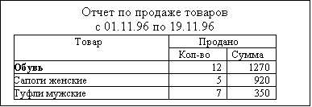

Язык запросов предназначен для описания запросов к документам, справочникам, регистрам, журналам расчетов, планам счетов, бухгалтерским операциям и проводкам. Текст описания запроса передается методу Выполнить (см. Главу «Работа с Запросами») в качестве параметра. В результате выполнения этого метода генерируется временный выходной набор данных, который в дальнейшем используется для заполнения формы отчета.
Текст описания запроса на языке запросов состоит из последовательности операторов. Концом оператора является символ ";". Операторы могут записываться в любом порядке, однако, следует помнить, что интерпретатор языка запросов однопроходный, следовательно, сначала следует описать переменную, и только потом ее использовать в операторах Группировка, Функция или Условие.
Пример:
ТекстЗапроса =
"//({ЗАПРОС(РасчЛистки)
|
// Задаем интервал запроса
|Период с ДатаНач по ДатаКон;
|
// Определяем внутренние переменные
|Рез =
ЖурналРасчетов.Зарплата.Результат;
|Расч =
ЖурналРасчетов.Зарплата.ВидРасч;
|Дни = ЖурналРасчетов.Зарплата.Дни;
|Сотр = ЖурналРасчетов.Зарплата.Объект;
|
// Назначаем группировки
|Группировка Сотр без групп;
|Группировка Расч;
|
// Назначаем функции
|Функция Сум = Сумма(Рез);
|Функция Дней = Сумма(Дни);
|
// Назначаем условие
|Условие(Рез <> 0);
|"//}}ЗАПРОС
;
// ...
В синтаксических диаграммах языка запросов используются следующие символы:
|
Символ |
Значение |
|
[ ] |
В квадратных скобках заключаются необязательные синтаксические элементы. |
|
[ ]+ |
В квадратных скобках со знаком "+" заключаются обязательные синтаксические элементы, которые могут использоваться один или более раз. |
|
[ ]* |
В квадратных скобках со знаком "*" заключаются необязательные синтаксические элементы, которые могут использоваться один или более раз. |
|
( ) |
Круглые скобки заключают в себе список параметров. |
|
| |
Вертикальной линией разделяются синтаксические элементы, среди которых нужно выбирать один и только один. |
Ключевые слова — это слова, которые используются языком запросов для обозначения встроенных операторов.
Приведенные далее ключевые слова являются зарезервированными и не могут использоваться в качестве имен внутренних переменных описания запросов. Каждое ключевое слово имеет как минимум два представления — русское и английское. Английское представление является традиционным для языков программирования. Ключевые слова в русском и английском представлении могут свободно смешиваться в одном исходном тексте. Регистр букв ключевых слов не имеет значения. Ниже приведен полный список зарезервированных слов языка запросов в обоих представлениях.
|
Русский яз. |
Английский яз. |
|
Без |
Without |
|
Год |
Year |
|
Групп |
Groups |
|
Группировка |
Group |
|
День |
Day |
|
Документ |
Document |
|
И |
And |
|
Или |
Or |
|
Квартал |
Quarter |
|
Когда |
When |
|
Месяц |
Month |
|
Неделя |
Week |
|
НомерСтроки |
LineNum |
|
Обрабатывать |
Process |
|
ОбрабатыватьДокументы |
ProcessDocuments |
|
ОбрабатыватьОперации |
PrосessOperations |
|
Период |
Period |
|
ПериодЖурнала |
Journal Period |
|
По |
By |
|
По |
Till |
|
С |
From |
|
СтрокаДокумента |
Document Line |
|
Упорядочить |
Order |
|
Условие |
Condition |
|
Функция |
Function |
Все ключевые слова могут быть набраны в любом регистре (верхний и нижний), например: Функция, ФУНКЦИЯ, фУНКЦИЯ .
Комментарий в тексте описания запроса начинается парой символов //и заканчивается концом строки.
Пример:
// Это — комментарий
Группировка Кат; // Это тоже комментарий
Язык содержит следующие типы констант:
Числовая константа описывается следующей синтаксической диаграммой:
[+|-][0-9]+
|
[0-9]*.[0-9]+
Пример:
-17
43.712
.43842
Строковая константа — это строка, заключенная в двойные кавычки.
Пример:
"Это текстовая константа" //
ОК
"Это ошибочная константа
и должна находиться на одной
строке" // Ошибка
Константа типа "дата" задается в виде строки, заключенной в одинарные кавычки, в формате 'ДД.ММ.ГГ' или 'ДД.ММ.ГГГГ'.
Пример:
'21.05.96'
'25.09.1964'
Внутренняя переменная — это переменная, объявленная в тексте описания запроса. Именем переменной может быть любая последовательность букв, цифр и знаков подчеркивания "_", начинающаяся с буквы или знака подчеркивания "_". Имена внутренних переменных не должны совпадать с зарезервированными словами языка запросов. Распознавание имен переменных, названий операторов, процедур и функций ведется без учета регистра букв.
Пример:
*
// имена внутренних переменных в
описании запроса
_43842 // ОК
НачалоПериода // ОК
712piece // Ошибка: начинается с цифры
Week // Ошибка: ключевое слово зарезервировано
*
// применение имен внутренних
переменных описания запроса
// в программном модуле после
позиционирования строки
// выборки функцией Группировка
Сотр = НовЗапрос.Сотр;
Кат = НовЗапрос.Кат;
ИТОГ = НовЗапрос.Итого;
Конкретизация переменной — это уточнение описания внутренней переменной, если это возможно в текущем контексте. Конкретизации переменной могут использоваться в языке запросов в операторах Группировка ... Упорядочить По и в качестве аргумента оператора Функция (см. далее).
Синтаксис:
<ВнутренняяПеременная>[.<Путь>]+;
Параметры:
|
<ВнутренняяПеременная> |
Идентификатор объявленной ранее внутренней переменной. |
|
<Путь> |
Доступный атрибут внутренней переменной или конкретизации переменной (см. «Атрибуты, доступные при описании внутренних переменных»). |
Пример:
Запрос =
СоздатьОбъект("Запрос");
ТекстЗапроса =
" //{{ЗАПРОС(ОбработкаДок)
|Период с '01.10.96' по '05.10.96';
|ОбрабатыватьДокументы Все;
|Тов =
Справочник.Товары.ТекущийЭлемент, Документ.РасхНакл.Товар;
|
// используем конкретизацию внутренней переменной Тов
|Группировка Тов Упорядочить По Тов.Наименование;
|Группировка Документ;
|Группировка СтрокаДокумента;
|"//}}ЗАПРОС
// Если ошибка в запросе, то выход из
процедуры
Если Запрос.Выполнить(ТекстЗапроса) = 0
Тогда
Возврат;
КонецЕсли;
Внимание! Запрос не манипулирует величинами типа «Строка неограниченной длины».
Внешние переменные — это переменные из области видимости процедуры или функции программного модуля, в теле которого используется данный запрос. Внешние переменные в тексте описания запроса могут использоваться в операторах Период С и Условие.
Пример:
Перем ДатаНач, ДатаКон;
Процедура Сформировать()
Если (Число(ДатаНач) = 0) ИЛИ (Число(ДатаКон) = 0) Тогда
Предупреждение("Не задан период!");
Возврат;
КонецЕсли;
// Создание объекта типа "Запрос"
Запрос = СоздатьОбъект("Запрос");
ТекстЗапроса =
"//{{ЗАПРОС(Сформировать)
| // используем внешние
переменные ДатаНач и ДатаКон
|с ДатаНач по ДатаКон;
|Рез = ЖурналРасчетов.Зарплата.Результат;
|Сотр = ЖурналРасчетов.Зарплата.Объект;
|Группировка Сотр без групп;
|Группировка ПериодЖурнала;
|Функция Сум = Сумма(Рез);
|"//}}ЗАПРОС
;
//
используем внешнюю переменную ВыбСотр
Если ВыбСотр.Выбран() = 1 Тогда
// используем в запросе внешнюю переменную ВыбСотр
ТекстЗапроса = ТекстЗапроса + "Условие(Сотр = ВыбСотр);";
КонецЕсли;
// Если ошибка в запросе, то выход из процедуры
Если Запрос.Выполнить(ТекстЗапр) = 0 Тогда
Возврат;
КонецЕсли;
...
КонецПроцедуры // ВыбСотр — это
реквизит диалога
В языке запросов можно обращаться к атрибутам следующих видов данных:
|
Русское назв. |
Англ. Назв. |
Описание |
|
Документ |
Document |
Данные документов. |
|
Справочник |
Reference |
Данные справочников. |
|
Регистр |
Register |
Данные регистров. |
|
ЖурналРасчетов |
CalcJournal |
Данные журналов расчета. |
|
Счет |
Account |
Данные счетов. |
|
Операция |
Operation |
Данные бухгалтерских операций и проводок. |
Эти названия являются первыми в пути описания переменных. В качестве атрибутов допускается использовать любые реквизиты, которые заданы для них в конфигураторе в дереве метаданных (реквизиты для справочников, документов и журналов расчетов; измерения и ресурсы для регистров). Кроме этих атрибутов, разрешен так же доступ к следующим предопределенным атрибутам:
Доступные атрибуты объектов типа «Документ»:
|
Русское назв. |
Англ. Назв. |
Описание |
|
ВремяДок |
DocTime |
Время документа. |
|
ДатаДок |
DocDate |
Дата документа. |
|
НомерДок |
DocNum |
Номер документа. |
|
НомерСтроки |
LineNum |
Номер строки документа. |
|
ТекущийДокумент |
CurDocument |
Значение текущего документа. |
Доступные атрибуты объектов типа «Справочник»:
|
Русское назв. |
Англ.назв. |
Описание |
|
родитель |
Parent |
Родитель элемента многоуровневого справочника. |
|
Владелец |
Owner |
Владелец подчиненного справочника. |
|
Код |
Code |
Код элемента справочника. |
|
Наименование |
Description |
Наименование элемента справочника. |
|
ТекущийЭлемент |
CurItem |
Значение текущего элемента справочника. |
Доступные атрибуты объектов типа «Регистр»:
|
Русское назв. |
Англ.назв. |
Описание |
|
НомерСтроки |
LineNum |
Номер строки документа, выполнившего движение регистра (в случае, когда в Модулях документов в конфигурации перед движением регистра использовали метод ПривязыватьСтроку). |
|
ТекущийДокумент |
CurDocument |
Значение документа, выполнившего движение регистра. |
Доступные атрибуты объектов типа «ПланСчетов»:
|
Русское назв. |
Англ. назв. |
Описание |
|
БезКорреспонденций |
IsSingle |
Флаг того, что элемент плана счетов — забалансовый. |
|
Валютный |
IsCurrency |
Флаг валютного учета элемента плана счетов. |
|
КОД |
Code |
Код элемента плана счетов. |
|
Количественный |
Is
Amount |
Флаг количественного учета элемента плана счетов. |
|
Наименование |
Description |
Наименование элемента плана счетов. |
|
ТекущийСчет |
CurAccount |
Значение текущего счета плана счетов. |
Доступные атрибуты объектов типа «Операция»:
|
Русское назв. |
Англ. Назв. |
Описание |
|
ВремяОперации |
OperTime |
Время операции. |
|
ДатаОперации |
OperDate |
Дата операции. |
|
Содержание |
Description |
Содержание операции. |
|
СуммаОперации |
OperSum |
Сумма операции. |
|
ТекущийДокумент |
CurDocument |
Значение документа создавшего операцию. |
Доступные атрибуты объектов типа «Проводка»:
|
Русское назв. |
Англ. назв. |
Описание |
|
ВалСумма |
CurSum |
Валютная сумма проводки (для счетов с валютным учетом). |
|
Валюта |
Currency |
Валюта проводки. |
|
Количество |
Amount |
Количество проводки (для счетов с количественным учетом). |
|
КорСчет |
CorAccount |
Корреспондирующий счет. Корреспондирующим счетом, для которого является Счет. |
|
Сумма |
Sum |
Сумма проводки. |
|
Счет |
Account |
Счет, для обработки корреспонденции. Корреспондирующим счетом, для которого является КорСчет. |
Пример:
*
Запрос =
СоздатьОбъект("Запрос");
ТекстЗапроса =
"//{{ЗАПРОС(Сформировать)
|Период с НачДата по КонДата;
|ДОКУМ =
Документ.РасходнаяБН.ТекущийДокумент,
|
Документ.РасходнаяКредит.ТекущийДокумент,
|
Документ.РасходнаяНал.ТекущийДокумент,
|
Документ.РасходнаяРеализ.ТекущийДокумент,
|
Документ.Счет.ТекущийДокумент;
|Группировка ДОКУМ; //по документам
|"//}}ЗАПРОС
;
*
//Создание объекта типа Запрос
Запрос =
СоздатьОбъект("Запрос");
ТекстЗапроса =
"//{{ЗАПРОС(Печать)
|Товар = Справочник.Товары.ТекущийЭлемент;
|Группировка Товар Упорядочить по
Товар.МинЗапас;
|"//}}ЗАПРОС
*
Запрос =
СоздатьОбъект("Запрос");
ТекстЗапроса =
"//{{ЗАПРОС(Сформировать)
|Период с НачДата по КонДата;
|ВидТоплива =
Регистр.ПокупателиКолво.ВидыТоплива;
|Вес = Регистр.ПокупателиКолво.Кг;
|Покуп =
Регистр.ПокупателиКолво.Покупатели;
|Док =
Регистр.ПокупателиКолво.ТекущийДокумент;
|Ном =
Регистр.ПокупателиКолво.НомерСтроки;
|Группировка ВидТоплива; //по измерению
Регистра
|Группировка Док; // по документам,
двигавшим Регистр
|Группировка Ном; // по номерам строк
документов
|Функция ВсегоКолво = КонОст(Вес);
|Функция ПриходКолво = Приход(Вес);
|Условие(Покуп = ВыбПокупатель);
|"//}}ЗАПРОС
;
Синтаксис:
<ИмяПеременной> = <ОписаниеПеременной>
[, <ОписаниеПеременной>]+;
Параметры:
|
<ИмяПеременной> |
Имя объявляемой внутренней переменной описания запроса. |
|
<ОписаниеПеременной> |
Указывает на доступный в языке запросов атрибут документа, справочника, регистра или журнала расчетов (см. «Атрибуты, доступные при описании внутренних переменных»). |
Описание:
Внутренние переменные используются в тексте запроса для образования ссылок на объекты конфигурации, чтобы использовать их при построении таких операторов запроса, как Группировка, Функция, Условие.
В объявлении внутренней переменной можно указывать несколько вариантов <ОписанияПеременной>. Все описания должны указывать на один и тот же тип данных (число, строку, справочник или документ). Переменной, указывающей на разные справочники или документы присваивается тип данных «Справочник неопределенного вида» или «Документ неопределенного вида» соответственно.
* Например, можно определить внутреннюю переменную:
Товар = Документ.Перемещение.Товар,
Документ.Расходная.Товар;
и использовать ее для создания Группировки. Такой состав внутренней переменной как бы дает Группировке задание — просмотреть все документы видов "Перемещение" и "Расходная" и выбрать все товары, встречающиеся либо в документах вида "Перемещение", либо в документах "Расходная".
* Еще пример. Допустим, у нас есть регистр "Взаиморасчеты" и регистр "Кредиты", и в том и в другом есть измерение "Клиент". Определяем внутреннюю переменную:
Должник = Регистр.Взаиморасчеты.Клиент,
Регистр.Кредиты.Клиент;
Если использовать такую внутреннюю переменную для образования Группировки, то она будет означать следующее: пройти по регистру "Взаиморасчеты" и по регистру "Кредиты", вычислить заданные в запросе Функции и выбрать значения "Клиентов", для которых значения хотя бы одной функции будет ненулевой. Здесь мы видим, что формирование запроса по регистрам имеет некоторые особенности (обязательно наличие Функций, причем их вычисленные значения должны быть отличны от нуля, только в этом случае найденные объекты включаются во временный набор данных формируемый запросом).
Если описания внутренней переменной указывают на разные типы данных, например, на «Справочник» и на «Документ», то это просто вызовет сообщение об ошибке. Например, следующее определение внутренней переменной будет ошибочным:
ААА = Справочник.Товары.ТекущийЭлемент,
Документ.Счет.ТекущийДокумент;
// ЭТО ОШИБКА !!!
Однако, допускается в описании внутренней переменной указание на разные справочники либо на разные документы. Переменной, указывающей на разные справочники или документы присваивается тип данных «Справочник неопределенного вида» или «Документ неопределенного вида» соответственно.
* Например, правомерно задать такую внутреннюю переменную:
Парам =
Документ.Счет.Клиент, Документ.Счет.Фирма;
(Здесь предполагается, что в контексте конфигурации, реквизиты "Клиент" и "Фирма" — это элементы справочников). Если использовать такую внутреннюю переменную для построения Группировки, то она будет означать следующее: пройти по документам "Счет" и выбрать значения клиентов и фирм, встречающихся в них (и, например, упорядочить эти элементы по наименованию). Как интерпретировать результаты полученной выборки при таком запросе — будет зависеть от контекста поставленной задачи.
В языке запросов описание внутренних переменных для агрегатных типов данных типа «Операция» и «Проводка» начинается со слова «Операция» вне зависимости от того, будет ли обращение к бухгалтерским операциям или к проводкам. <ОписаниеПеременной> определяется следующим образом:
Операция.(
<Реквизиты0перации>
| <ПредРеквОпераций>
| <РеквизитыПроводок>
| <ПредРеквПроводок>
| Дебет.(
Счет
| <Субконто>
)
| Кредит.(
Счет
| <Су6конто>
)
| Субконто.
<ВидСубконто>
| КорСубконто.
<ВидСубконто>
)
|
<РеквизитыОперации> |
Реквизиты операции объявленные в метаданных. |
|
<ПредРеквОпераций> |
Предопределенные реквизиты Операций. |
|
<РеквизитыПроводок> |
Реквизиты проводок, объявленные в метаданных. |
|
<ПредРеквПроводок> |
Предопределенные реквизиты Проводок. |
|
<ВидСубконто> |
Идентификатор вида субконто. |
Применение слов "Дебет", "Кредит" в описании переменных позволяют оперировать дебетовой и кредитовой частями проводки, такими как счет и вид субконто.
Применение слов "Субконто" и "КорСубконто" в описании переменных позволяют оперировать как субконто, так и корреспондирующим субконто.
*
Сум =
Операция.Сумма;
Сч =
Операция.Дебет.Счет, Операция.Кредит.Счет;
Кратко суть этого раздела можно выразить так: при определении внутренних переменных запроса разработчик конфигурации должен ясно себе представлять суть и смысл взаимосвязи объектов конфигурации, которые объединяются в описании единой внутренней переменной, поскольку интерпретация полученных результатов выполнения запроса полностью зависит от контекста решаемой задачи.
Несколько слов о дополнительных именах доступа к стандартной информации, которые определены в языке запросов. Речь идет о конструкции ТекущийЭлемент для справочников и ТекущийДокумент для документов и регистров (не надо путать эти конструкции языка запросов с одноименными методами встроенного языка, хотя их смысл во многом совпадает).
Для справочников использование конструкции ТекущийЭлемент в описании внутренней переменной означает выборку элемента справочника как такового (целиком всей записи справочника).
Аналогично при работе с документами, использование конструкции ТекущийДокумент в описании внутренней переменной, означает выборку документа как такового (целиком всего документа как объекта конфигурации). Сравните два примера:
Пример 1.
* Здесь нас интересуют товары, встречающиеся в документах.
ТОВАР = Документ.РасходнаяБН.Товар,
Документ.РасходнаяКредит.Товар,
Документ.РасходнаяНал.Товар,
Документ.РасходнаяРеализ.Товар,
Документ.Счет.Товар;
Пример 2.
* Здесь нас интересуют сами документы указанных видов как таковые.
ДОКУМ =
Документ.РасходнаяБН.ТекущийДокумент,
Документ.РасходнаяКредит.ТекущийДокумент,
Документ.РасходнаяНал.ТекущийДокумент,
Документ.РасходнаяРеализ.ТекущийДокумент,
Документ.Счет.ТекущийДокумект;
Использование для документов конструкции НомерСтроки в описании внутренней переменной, означает выборку номеров строк документов (не самих строк, а чисел, обозначающих номера строк в документе).
СТРОКА =
Документ.РасходнаяБН.НомерСтроки;
Для регистров использование конструкции ТекущийДокумент в описании внутренней переменной означает выборку документов (целиком всего документа как объекта конфигурации), которые произвели движение по данному регистру.
Использование для регистра конструкции НомерСтроки в описании
внутренней переменной, означает выборку связанных номеров строк тех документов,
которые произвели движение по регистру (в случае, когда в Модулях документов в
конфигурации перед движением регистра использовали метод ПривязыватьСтроку).
Пример:
Запрос =
СоздатьОбъект("Запрос");
ТекстЗапроса =
"//{{ЗАПРОС(Сформировать)
|Период с НачДата по КонДата;
|ВидТоплива =
Регистр.ПокупателиКолво.ВидыТоплива;
|Покуп =
Регистр.ПокупателиКопво.Покупатели;
|Док =
Регистр.ПокупателиКолво.ТекущийДокумент;
|Ном = Регистр.ПокупателиКолво.НомерСтроки;
|Вес = Регистр.ПокупателиКолво.Кг;
|Группировка ВидТоплива; // по
измерению Регистра
|Группировка Док; //по документам,
двигавшим Регистр
|Группировка Ном; // по номерам строк
документов
|Функция ВсегоКолво = КонОст(Вес);
|Функция ПриходКолво = Приход(Вес);
|Условие(Покуп = Покупат);
|"//}}ЗАПРОС
;
// Если ошибка
в запросе, то выход из процедуры
Если Запрос.Выполнить(ТекстЗапроса) = 0
Тогда
Возврат;
КонецЕсли;
В программном модуле конфигурации (т. е. вне текста запроса) существует доступ (там, где это имеет смысл) к значениям всех объявленных в тексте запроса внутренних переменных, даже тех, которые не участвуют ни в группировках, ни в функциях. Другими словами, если объявленная в тексте запроса внутренняя переменная не задействована в запросе ни в группировке, ни в функции ни в условии, данная внутренняя переменная все же присутствует в запросе.
Установить временной интервал дат формирования запроса.
Синтаксис:
[[Период] С
<Дата>|<ВнешняяПерем> [ПО <Дата>|<ВнешПеременная>];]
Англоязычный синоним:
[[Period]
From <Дата>|<ВнешПеременная> [Till <Дата> |
<ВнешПеременная>];]
Параметры:
|
<Дата> |
Константа типа «Дата», «Документ» или . позиция документа. |
|
<ВнешПеременная> |
Внешняя переменная типа «Дата», «Документ» или позиция документа. Если указан документ, то за момент времени принимается дата и время документа. |
|
По |
Добавочное ключевое слово для связки первой части команды со второй, необязательной частью. |
Описание:
Оператор Период С устанавливает интервал дат формирования запроса. Если в описании запроса оператор Период С опущен, то интервал дат формирования запроса устанавливается в точку актуальности итогов (ТА) (или на РабочуюДату, если не установлена компонента «Оперативный учет»), запрос формируется только на этот момент времени.
Использование данного оператора актуально только в том случае, если запрос строится для выборки данных по регистрам, журналам расчетов и/или документам. Здесь указывается, в каком интервале выбирать движения регистров и/или подборку документов. При выполнении запроса только по справочникам эта секция не играет никакой роли.
Параметрами оператора Период С являются значения момента времени («Дата», «Документ» или позиция документа) начала и конца временного интервала. Следует особо обратить внимание, что если интервал задается с точностью до даты, то интервал времени считается от начала даты нижней границы интервала до конца даты верхней границы интервала. Если вторая часть оператора после ключевого слова По пропущена или значение второго параметра команды равно нулю, то интервал времени применяется от начального момента времени до ТА (или по РабочуюДату, если не установлена компонента «Оперативный учет»). Это особенно важно при формировании запросов по регистрам, т. к. запрос по регистрам может строиться от любой даты в прошлом до ТА. Поэтому, если вы укажете в запросе верхнюю границу интервала большей или равной дате ТА, то программа скорее всего сообщит «Не могу рассчитать регистры за ТА» (поскольку время ТА лежит где то в пределах даты, а запрос пытается учесть всю дату в целом). Поэтому при формировании текста запроса следует вставлять дополнительную проверку типа той, что приведена в следу ющем примере:
Пример:
Запрос =
СоздатьОбъект("Запрос");
ТекстЗапроса =
"Счет = Регистр.Cash.Счет;
|Статья = Регистр.Cash.Статья;
|СуммаЭквивалента2 =
Регистр.Cash.СуммаЭквивалента2;
|СуммаЭквивалента1 =
Регистр.Cash.СуммаЭквивалента1;
......
Если ДатаКонца
>= ПолучитьДатуТА() Тогда
ТекстЗапроса = ТекстЗапроса + "Период с ДатаНачала;";
Иначе
ТекстЗапроса = ТекстЗапроса + "Период с ДатаНачала по
ДатаКонца;";
КонецЕсли;
Если Запрос.Выполнить(ТекстЗапроса) = 0
Тогда
Возврат;
КонецЕсли;
Работа команды при формировании запросов к журналам расчетов зависит от того, используется ключевое слово "Период" или нет. Применение конструкции "Период С ... По..." приводит к тому, что выборка записей из журнала расчетов осуществляется в разрезе расчетных периодов конкретного журнала, фактически, по времени ввода строк журнала расчетов в систему.
Применение конструкции "С ... По ..." приводит к тому, что выборка записей из журнала расчетов проводится по времени действия записей журнала расчетов, определяемых реквизитами журнала расчетов "ДатаНачала" и "ДатаОкончания", а не временем их ввода в журнал. Более подробно о двойственности временного представления журналов расчетов см. выше, в главе «Работа с Журналами расчетов».
Замечание. Работа запроса с журналами расчетов, с использованием конструкции "Период С ... По ...", аналогична выборке записей в журнале расчетов, организуемой при помощи метода журнала расчетов ВыбратьПериод. С другой стороны, запрос, использующий конструкцию "С ... По ...", аналогичен выборке, организуемой при помощи метода журнала расчетов ВыбратьЗаписи.
Пример:
*
Процедура
РасчЛистки()
Перем Запрос, Флаг;
Перем ДатаНач, ДатаКон;
ЖР = СоздатьОбъект{"ЖурналРасчетов.Зарплата");
Нач = ЖР.НачалоТекущегоПериода();
Кон = ЖР.КонецТекущегоПериода();
//Создание объекта типа Запрос
Запрос = СоздатьОбъект("Запрос");
Флаг = Запрос.Выполнить(
"//{{ЗАПРОС(РасчЛистки)
|Период С ДатаНач По ДатаКон; // выборка по расчетным периодам!
|Рез = ЖурналРасчетов.Зарплата.Результат;
|Расч = ЖурналРасчетов.Зарплата.ВидРасч;
|Дни = ЖурналРасчетов.Зарплата.Дни;
|Сотр = ЖурналРасчетов.Зарплата.Объект;
|Группировка Сотр без групп;
|Группировка Расч;
|функция Сум = Сумма(Рез);
|функция Дней = Сумма(Дни);
|Условие(Рез о 0);
|"//}}ЗАПРОС
);
// ...
КонецПроцедуры;
*
//Создание
объекта типа Запрос
Запрос = СоздатьОбъект("Запрос");
// ниже
формируется текст запроса с выборкой по времени
// действия записей журнала расчетов, а
не по расчетным периодам!
ТекстЗапроса =
"//{{ЗАПРОС(Сформировать)
|С ДатаНач По ДатаКон;
|Рез =
ЖурналРасчетов.Зарплата.Результат;
|Сотр = ЖурналРасчетов.Зарплата.Объект;
|ПЖ =
ЖурналРасчетов.Зарплата.ПериодРегистрации;
|Группировка Сотр без групп;
|Группировка ПЖ;
|Функция Сум = Сумма(Рез);
"//}}ЗАПРОС
;
Флаг =
Запрос.Выполнить(ТекстЗапроса);
// ...
Назначить условие обработки документов в запросе.
Синтаксис:
ОбрабатыватьДокументы[Непроведенные|Проведенные|Все];
Англоязычный синоним:
ProcessDocuments[NonTransacted|Transacted|All];
Описание:
Оператор ОбрабатыватьДокументы назначает режим обработки документов в запросе. В операторе указывается, какими документами должен оперировать запрос: проведенными, непроведенными или теми и другими. По умолчанию в запросе обрабатываются только проведенные документы.
Пример:
Запрос =
СоздатьОбъект("Запрос");
ТекстЗапроса = "//{{ЗАПРОС(ОбработкаДок)
|Период с '01.10.96' по '05.10.96';
|ОбрабатыватьДокументы Все;
|Тов =
Справочник.Товары.ТекущийЭлемент, Документ.РасхНакл.Товар;
|Группировка Тов упорядочить по
Тов.Наименование;
|Группировка Документ;
|Группировка СтрокаДокумента;
|"//}}ЗАПРОС
;
// Если ошибка
в запросе, то выход из процедуры
Если Запрос.Выполнить(ТекстЗапроса) = 0
Тогда
Возврат;
КонецЕсли;
Назначить условие обработки бухгалтерских операций в запросе.
Синтаксис:
ОбрабатыватьОперации[Включенные|Выключенные|Все];
Англоязычный синоним:
ProcessOperations[On|Off|All];
Описание:
Оператор ОбрабатыватьОперации назначает режим обработки бухгалтерских операций в запросе. В операторе указывается, какими операциями должен оперировать запрос: с включенными проводками, с выключенными проводками или теми и другими. По умолчанию в запросе обрабатываются только операции с включенными проводками.
Пример:
Запрос =
СоздатьОбъект("Запрос");
ТекстЗапроса =
"//{{ЗАПРОС(ОбработкаОпер)
|Период с '01.10.96' по '05.10.96';
|ОбрабатыватьОперации Все;
|Опер = Операция.ТекущийДокумент;
|Группировка Опер;
|"//}}ЗАПРОС
;
// Если ошибка
в запросе, то выход из процедуры
Если Запрос.Выполнить(ТекстЗапроса) = 0
Тогда
Возврат;
КонецЕсли;
Назначить условие обработки помеченных на удаление объектов в запросе.
Синтаксис:
Обрабатывать[ПомеченныеНаУдаление|НеПомеченныеНаУдаление|Все];
Англоязычный синоним:
Process[MarkedOnRemoving|NonMarkedOnRemoving|All];
Описание:
Оператор Обрабатывать назначает режим обработки помеченных на удаление объектов в запросе. В операторе указывается, какими объектами должен оперировать запрос: не помеченными на удаление, помеченными на удаление или теми и другими. По умолчанию в запросе обрабатываются все объекты.
Пример:
Запрос =
СоздатьОбъект("Запрос");
ТекстЗапроса =
"//{{ЗАПРОС(Обработка)
|Период с '01.10.96' по '05.10.96';
|Обрабатывать НеПомеченныеНаУлаление;
|Товар =
Справочник.Товар.ТекущийЭлемент;
|Группировка Товар упорядочить по
Товар.Наименование;
|"//}}ЗАПРОС
;
// Если ошибка
в запросе, то выход из процедуры
Если Запрос.Выполнить(ТекстЗапроса) = 0
Тогда
Возврат;
КонецЕсли;
Вычисляет функцию и включает ее результат в запрос.
Синтаксис:
Функция <ИмяФункции> =
<ТипФункции> (<Параметр>|<УточненныйПараметр>)
[Когда (<Условие>)];
Англоязычный синоним:
Function <ИмяФункции>=
<ТипФункции> (<Параметр>|<УточненныйПараметр>)
[When (<Условие>)];
Параметры:
|
<ИмяФункции> |
Имя, которое
присваивается функции. По этому имени можно в дальнейшем обращаться к значению
вычисленной функции из вызывающего программного модуля как к атрибуту
запроса. Данную внутреннюю переменную заранее объявлять не нужно. Она
фактически неявно объявляется в операторе Функция. |
|
<TипФyнкции> |
Ключевое слово одной из встроенных функций языка. Может быть одним из приведенных ниже. |
|
<Параметр> |
Имя объявленной ранее внутренней переменной, значение которой используется как параметр встроенной функции <ТипФункции>. В функциях: Сумма, Среднее, Максимум, Минимум в качестве данного параметра возможно использование арифметического выражения в терминах встроенного языка 1С:Предприятие. |
|
<УточненныйПараметр> |
Конкретизация
объявленной ранее внутренней переменной, значение которой используется как
аргумент встроенной функции < ТипФункции>. |
|
Когда |
Необязательное добавочное ключевое слово, использование которого в команде означает, что вычисление функции следует производить только при условии, когда заданное логическое выражение <Условие> истинно. |
|
<Условие> |
Логическое выражение встроенного языка 1С:Предприятие. В логическом выражении могут участвовать как внутренние, так и внешние переменные запроса (см. описание метода Условие). Используется только после ключевого слова Когда. |
Описание:
Оператор Функция вычисляет функцию <ТипФункции> и присваивает ее значение внутренней переменной <ИмяФункции>.
Типы применяемых функций предопределены и могут быть следующими:
|
Тип |
Англояз. Синоним |
Выполняемое действие |
|
Сумма |
Sum |
Вычисляет сумму выбранных по запросу значений параметра.1 |
|
Среднее |
Avg |
Вычисляет среднее из выбранных по запросу значений параметра. |
|
Минимум |
Min |
Вычисляет минимум из выбранных по запросу значений параметра. |
|
Максимум |
Мах |
Вычисляет максимум из выбранных по запросу значений параметра. |
|
Счётчик |
Count |
Подсчитывает количество записей, вошедших в выборку. |
|
НачОст |
BegRest |
Вычисляет начальный остаток для выбранных по запросу значений параметра.2 |
|
КонОст |
EndRest |
Вычисляет конечный остаток для выбранных по запросу значений параметра.2 |
|
Приход |
Debit |
Вычисляет приход для выбранных но запросу значений параметра.2 |
|
Расход |
Credit |
Вычисляет расход для выбранных по запросу значений параметра.2 |
|
СНД |
IDB |
Вычисляет сальдо начальное дебетовое для выбранных по запросу значений параметра.3 |
|
СКД |
FDB |
Вычисляет сальдо конечное дебетовое для выбранных по запросу значений параметра.3 |
|
СНК |
ICD |
Вычисляет сальдо начальное кредитовое для выбранных по запросу значений параметра.3 |
|
СКК |
FCD |
Вычисляет сальдо конечное кредитовое для выбранных по запросу значений параметра.3 |
|
ДО |
TD |
Вычисляет дебетовые обороты для выбранных по запросу значений параметра. |
|
КО |
TC |
Вычисляет кредитовые обороты для выбранных по запросу значений параметра.3 |
|
КорДО |
CorTD |
Вычисляет дебетовые обороты между корреспондирующим счетам или субконто для выбранных по запросу значений параметра.3, 4 |
|
КорКО |
CorTC |
Вычисляет кредитовые обороты между корреспондирующим счетам или субконто для выбранных по запросу значений параметра.3, 4 |
1Замечание: Для ресурсов оборотных регистров допускается вызывать только тип функции "Сумма".
2Замечание: Типы функций НачОст, КонОст, Приход, Расход можно использовать только с параметрами, указывающими на ресурсы регистров остатков. Для ресурсов регистров остатков другие типы функций вызывать нельзя.
3Замечание: Функции СНД, СНК, СКД, СКК, ДО, КО, КорДО, КорКО можно использовать только с реквизитами проводки: Сумма, Количество или ВалСумма.
4Замечание: Функции КорДО и КорКО накапливают значения только тогда когда в запросе есть обращение к реквизитам проводок Счет, КорСчет Субконто или КорСубконто.
Замечание: В программном модуле, где используется запрос, <ИмяФункции> будет являться атрибутом запроса. При помощи данного атрибута можно обращаться к значению вычисленной в запросе функции.
Замечание: В функциях: Сумма, Среднее, Максимум, Минимум в качестве аргумента возможно использование арифметического выражения в терминах встроенного языка.
Пример:
...
|КолВо =
Документ.ВидДокумента.Количество;
|Цена = Документ.ВидДокумента.Цена;
|Функция Сум = Сумма(КолВо * Цена);
|Функция Макс = Максимум(Окр(КолВо) *
Окр(Цена));
|Функция Средн =
Среднее(ФункцияОпределеннаяВМодуле(КолВо, Цена));
...
Пример:
// Создание объекта типа Запрос
Запрос =
СоздатьОбъект("Запрос");
ТекстЗапроса =
"//{{ЗАПРОС(Функции)
|Период с ДатаНач по ДатаКон;
|Оклад = Справочник.Сотрудники.Оклад;
|Подр = Справочник.Сотрудники.Подразделение;
|Ктг = Справочник.Сотрудники.Категория;
|Группировка Подр без групп;
|Группировка Ктг без групп;
|Функция Всего = Сумма(Оклад);
|Условие((Ктг.Выбран() = 1) И
(Подр.Выбран() = 1));
|"//}}ЗАПРОС
;
Если Запрос.Выполнить(ТекстЗапроса) = 0
Тогда
Возврат;
КонецЕсли;
// ...
Итог = Запрос.Всего;
// ...
Оператор Функция предназначен для вычисления и накопления некоторых численных значений в процессе формирования выборки по запросу.
Кроме того, при формировании временного набора данных запрос специально формирует итоговые записи, в которые заносит накопленные значения вычисленных функций для каждой вложенной Группировки (подробнее об этом см. главу данной книги «Структура запросов и методика их использования»).
Операторы функций в запросе можно опускать, тогда запрос просто не будет ничего вычислять, а просто во временный набор данных заносятся записи со значениями Группировок. Однако это справедливо только для работы запросов по справочникам и по документам. При работе запроса по регистрам следует помнить, что в этом случае обязательно наличие Функций, причем только в том случае, когда их вычисленные значения отличны от нуля (хотя бы одной из заданных Функций), найденные объекты включаются во временный набор данных, формируемый запросом. Если при работе запроса по регистрам в тексте запроса операторы функций опущены, то программа не выдаст никакого сообщения об ошибке, добросовестно пройдет по всем Группировкам, не вычислит никаких значений Функций и, значит, ничего не запишет во временном файле.
При создании в тексте запроса внутренней переменной, которую вы предполагаете использовать в качестве параметра оператора Функция, надо учитывать, что тип этой внутренней переменной должен быть «число», т. к. функции в языке запросов обрабатывают только численные значения.
В тексте запроса, при описании оператора Функция можно использовать необязательное ключевое слово Когда, использование которого в операторе означает, что вычисление функции следует производить только при условии, что значение логического выражения, заданного в параметре ключевого слова является ИСТИНА. Синтаксис применяемого логического выражения полностью аналогичен синтаксису разрешенному к применению в операторах Условие.
Следует понимать, что не все функции внутри конкретной группировки запроса могут иметь четко интерпретируемый смысл. Например, для группировки по документу движения регистра следующие функции
|Функция ПрихКол = Приход(Количество);
|Функция РасхКол = Расход(Количество);
имеют четкий смысл — приращения, сделанные документом при движении регистра. С другой стороны, в той же группировке следующие функции:
|Функция НачКол = НачОст(Количество);
|Функция КонКол = КонОст(Количество);
явно не имеют смысла (в запросах по регистрам, обычно задают период запроса при помощи оператора Период C. Функция НачКол в данном примере должна по смыслу показывать остаток ресурса "Количество" на начальную дату запроса. Внутри группировки по документу вопрос: «Какой начальный остаток ресурса на дату 10.01.97?» по документу, проведенному, например, 13.01.97, не имеет смысла). Поэтому в таких ситуациях функция будет иметь нулевое значение.
Пример:
Запрос =
СоздатьОбъект("Запрос");
Текст3апроса=
'//{{ЗАПРОС(Функции)
|Период с ДатаОтчета;
|Товар = Регистр.КвотыТоваров.Товар;
|Отдел = Регистр.КвотыТоваров.Отдел;
|Сотрудник =
Регистр.КвотыТоваров.Сотрудник;
|Партнер =
Регистр.КвотыТоваров.Партнер;
|Док =
Регистр.КвотыТоваров.ТекущийДокумент;
|Количество =
Регистр.КвотыТоваров.КвотаТовара;
|Группировка Товар;
|Группировка Отдел;
|Группировка Сотрудник;
|Группировка Партнер;
|Группировка Док;
|Функция НачКол = НачОст(Количество);
|Функция ПрихКол = Приход(Количество);
|Функция РасхКол = Расход(Количество);
|Функция КонКол = КонОст(Количество);
|// Следующие Функции вычисляем только
при определенных
|// условиях, чтобы получить
отфильтрованные итоги
|Функция ПрихКолТов =
Приход(Количество) Когда (Док.ФлагТовара = 1);
|Функция РасхКолТов =
Расход(Количество) Когда (Док.ФлагТовара = 1);
|Функция ПрихКолОтд =
Приход(Количество) Когда (Док.ФлагОтдела = 1);
|Функция РасхКолОтд =
Расход(Количество) Когда (Док.ФлагОтдела = 1);
|Функция ПрихКолСотр =
Приход(Количество) Когда (Док.ФлагСотрудника = 1);
|Функция РасхКолСотр =
Расход(Количество) Когда (Док.ФлагСотрудника = 1);
|"//}}ЗАПРОС
;
// Если ошибка
в запросе, то выход из процедуры
Если Запрос.Выполнить(ТекстЗапроса) = 0
Тогда
Возврат;
КонецЕсли;
Устанавливает порядок выборки информации.
Синтаксис:
Группировка
<ИмяГруппировки>|<ПредопредГруппировка>
[Упорядочить по <Порядок>[, <Порядок>]*]
[Без Упорядочивания][Без Групп][Все [ВошедшиеВЗапрос]];
Англоязычный синоним:
Group
<ИмяГруппировки>|<ПредопредГруппировка>
[Order By <Порядок>[,
<Порядок>]*]
[Without Order][Without Groups][All
[IncludedInQuery]];
Параметры:
|
<ИмяГруппировки> |
Имя объявленной ранее внутренней переменной, по значению которой устанавливается порядок выборки. По этому имени можно в дальнейшем обращаться к значению группировки из вызывающего программного модуля как к атрибуту запроса. |
|
<ПредопредГруппировка> |
Ключевое слово одной из встроенных предопределенных группировок языка запросов. По этому имени можно будет обращаться к значению группировки из вызывающего программного модуля. Возможные значения приведены ниже. |
|
упорядочить
по |
Необязательное добавочное ключевое слово. Параметры, следующие за данным ключевым словом, определяют упорядочивание строк в группировке. По умолчанию документы упорядочиваются по дате и времени документов, справочники — по коду или наименованию, в зависимости от основного представления, заданного при описании справочника в конфигураторе. |
|
<Порядок> |
Используется только после ключевого слова Упорядочить по. Конкретизация внутренней переменной <ИмяГруппировки>, значение которой является параметром упорядочивания строк в группировке. Кроме того, в данном параметре можно использовать имя функции, объявленной в этом же запросе в операторе Функция. |
|
Без
Упорядочивания |
Необязательное добавочное ключевое слово, которое преследует цель уменьшения времени формирования запроса, при условии, что ни упорядочивание, ни значения упорядочивания при использовании данного запроса не нужны. |
|
Без
Групп |
Необязательное добавочное ключевое слово, использование которого назначает вывод в запрос только простых элементов справочников (исключая группы). Используется только для группировок, построенных на основе внутренней переменной типа «справочник». |
|
Все |
Необязательное добавочное ключевое слово, действие которого зависит от типа внутренней переменной, на основе которой построена группировка. Используется только для группировок, построенных на основе внутренней переменной типа «справочник» или для предопределенных группировок, задающих временной интервал (Год, Месяц, Квартал, Неделя, День). Для предопределенных временных группировок подразумевается, что в запрос будут включены любые значения данных (в том числе нулевые) в каждый заданный момент времени с даты начала запроса по дату конца запроса (интервал задается оператором Период С...) Для группировок по справочникам подразумевается, что в запрос будут включены любые значения данных (в том числе нулевые) для каждого допустимого элемента справочника. |
|
ВошедшиеВЗапрос |
Необязательное добавочное ключевое слово действие которого уточняет предыдущее ключевое слово «Все». Использование данного слова подразумевает, что в каждую строку запроса будут включены значения данных (в том числе нулевые), для которых есть ненулевое значение хотя бы в одной строке запроса. |
Описание:
Оператор Группировка задает способ группировки информации и порядок ее упорядочивания в запросе.
Предопределенные группировки могут быть
следующими:
|
Предопределенн. Группировка |
Англояз. |
Выполняемое действие |
|
Документ |
Document |
Позволяет детализацию до каждого документа. |
|
СтрокаДокумента |
DocumentLine |
Позволяет детализацию до каждой строки табличной части каждого документа. |
|
День |
Day |
Группировки по дате, дают возможность накапливать значения по документам за конкретный период (на каждый день, неделю, месяц и т. д.). В запросе может присутствовать несколько группировок такого типа. |
Замечание: В программном модуле, где используется запрос, имя <ИмяГруппировки> (или <ПредопредГруппировка>) будет являться атрибутом запроса. Кроме того, это имя используется в качестве параметра метода запросов Группировка (см. главу «Работа с Запросами»).
Объекты, по которым запрос будет обрабатывать информацию и те значения которые он будет выбирать, упорядочивать и группировать во временном наборе данных, полностью определяются той внутренней переменной, на базе которой объявлена группировка (подробнее см. выше в разделе «Объявление внутренней переменной»).
Несколько операторов Группировка, следующих друг за другом в описании запроса, создают вложенные группировки запроса. Первая группировка — самая старшая, в нее будет вложена следующая группировка, далее будет вложена следующая и т. д. По смыслу, вложенная группировка осуществляет более детальный просмотр объекта внешней группировки. Например, если во внешней группировке мы просматриваем регистр, то во вложенной группировке можно просмотреть документы движений этого регистра, а далее можно сформировать группировку по номерам строк этих документов.
При описании вложенных группировок разработчик конфигурации должен ясно себе представлять суть и смысл образования вложенных группировок в формируемом запросе, поскольку интерпретация полученных результатов выполнения запроса полностью зависит от контекста решаемой задачи.
По умолчанию, документы упорядочиваются в группировке по дате и времени документов, элементы справочников — в зависимости от основного представления, заданного при описании справочника в конфигураторе (код или наименование). Однако критерий упорядочивания в группировке можно установить при помощи необязательного ключевого слова "Упорядочить по". Параметры, следующие за данным ключевым словом, определяют упорядочивание строк в группировке.
С параметром упорядочивания связан специальный метод для доступа к значениям объекта «Запрос». Речь идет об использовании метода ЗначениеУпорядочивания. В программном модуле, после того как запрос уже сформирован, мы можем при помощи этого метода получить значение поля упорядочивания из временного набора данных, не обращаясь к базе данных. Например, если у нас в запросе была группировка "Товар", а нам для формирования некоторого отчета нужны значения наименований товаров, то эти наименования товаров можно получить двумя способами:
Наим = Запрос.Товар.Наименование;
или
Наим =
3апрос.ЗначениеУпорядочивания("Товар", 1);
Смысл использования данного специального метода доступа в том, что значения упорядочивания хранятся во временном наборе данных, сформированном запросом, поэтому за этими значениями программе нет необходимости снова обращаться к информационной базе, а можно получить непосредственно из временного набора. Эффект использования специального метода доступа может проявиться только в сетевой версии информационной базы при формировании очень больших отчетов, время формирования которых порядка десятков минут. В этом случае применение этого метода доступа даст некоторый выигрыш по времени.
Пример:
Процедура
Группировки()
Перем Запрос, ТекстЗапроса;
Перем ДатаНач, ДатаКон;
ЖР = СоздатьОбъект("ЖурналРасчетов.Зарплата");
Нач = ЖР.НачалоТекущегоПериода();
Кон = ЖР.КонецТекущегоПериода();
//Создание объекта типа Запрос
Запрос = СоздатьОбъект("Запрос");
ТекстЗапроса =
"//{{ЗАПРОС(Группировки)
|Период с ДатаНач по ДатаКон;
|Рез = ЖурналРасчетов.Зарплата.Результат;
|Расч = ЖурналРасчетов.Зарплата.ВидРасч;
|Дни = ЖурналРасчетов.Зарплата.Дни;
|Сотр = ЖурналРасчетов.Зарплата.Объект;
|Группировка Сотр без групп;
|Группировка Расч;
|Функция Сум = Сумма(Рез);
|Функция Дней = Сумма(Дни);
|Условие(Рез о 0);
|"//})ЗАПРОС
;
// Если ошибка в запросе, то выход из процедуры
Если Запрос.Выполнить(ТекстЗапроса) = 0 Тогда
Возврат;
КонецЕсли;
// Подготовка к заполнению выходных форм данными запроса
Таб = СоздатьОбъект("Таблица");
Пока Запрос.Группировка("Сотр") = 1 Цикл
// Заполнение полей Сотр
Таб.ВывестиСекцию("Сотр ");
Пока Запрос.Группировка("Расч") = 1 Цикл
// Заполнение полей
Расч Таб.ВывестиСекцию("Расч");
КонецЦикла;
КонецЦикла;
Таб.Опции(0, 0, 0, 0);
Таб.ТолькоПросмотр(1);
Таб.Показать("Результат", );
// Вывод
заполненной формы
КонецПроцедуры
Не накапливать итоги по группировкам.
Синтаксис:
Без итогов;
Англоязычный синоним:
Without Totals;
Описание:
Цель данного оператора — увеличение скорости выполнения запроса, при условии, что итоговые записи при использовании запроса не нужны. Данный оператор языка запросов, дает возможность не накапливать итоги по группировкам. Использовать данный оператор в тексте запроса имеет смысл, когда запрос строится не для формирования сложного отчета, а например, для простой выборки значений из информационной базы для последующей их обработки.
В случае применения данного оператора в тексте запроса, при обходе результатов запроса применяется только один цикл обхода, используя метод объекта «Запрос» Группировка() без параметра.
Пример:
Запрос =
СоздатьОбъект("Запрос");
Текст3апроса
= "
...
|Группировка
Товар;
|Группировка
Склад;
|Без Итогов;
";
Если Запрос.Выполнить(ТекстЗапроса) = 1
Тогда
Возврат;
КонецЕсли;
Пока Запрос.Группировка() = 1 Цикл
...
КонецЦикла;
Замечание. Если в тексте запроса используется группировка по многоуровневому справочнику и не указано "Без Групп", то итоги по группам справочника будут накапливаться. Другими словами, если в запросе не нужны итоги по группам справочника, то в тексте запроса кроме использования оператора "Без Итогов" дополнительно следует в операторах "Группировка ..." использовать ключевое слово "Без Групп".
Назначить условие включения информации в запрос.
Синтаксис:
Условие(<ЛогическоеВыражение>);
Англоязычный синоним:
Condition
Параметры:
|
<ЛогическоеВыражение> |
Логическое выражение встроенного языка 1С:Предприятие. |
Описание:
Оператор Условие назначает условие включения информации в запрос. Если значение <ЛогическоеВыражение> верно, то информация включается в запрос, иначе нет.
Пример:
ТекстЗапроса =
"//{{ЗАПРОС(Одинарный)
|Период с ДатаНачала по ДатаКонец;
|Оклад = Справочник.Сотрудники.Оклад;
|Ктг = Справочник.Сотрудники.Категория;
|Группировка Ктг без групп;
|Функция Всего = Сумма(Оклад);
|Условие(Ктг.Выбран() = 1); // только для тех сотрудников
| //у кого заполнен реквизит Категория
|"//}}ЗАПРОС
;
В логическом выражении могут участвовать как внутренние, так и внешние переменные запроса, т. е. переменные программного модуля, доступные в процедуре, использующей запрос.
Пример:
* Здесь показан отрывок текста процедуры, в которой формируется некоторый отчет, причем переменные:
ВыбТовар,
ВыбОтдел, ВыбСотрудник
являются реквизитами диалога отчета, значит, они доступны в программном модуле, поэтому могут быть использованы в логическом выражении оператора Условие. В данном примере операторы Условие использованы для фильтрации в запросе только выбранных значений параметров отчета,
Запрос =
СоздатьОбъект("Запрос");
ТекстЗапроса =
"//{{ЗАПРОС(Квоты)
|Товар = Регистр.КвотыТоваров.Товар;
|Отдел = Регистр.КвотыТоваров.Отдел;
|Сотрудник =
Регистр.КвотыТоваров.Сотрудник;
|Партнер =
Регистр.КвотыТоваров.Партнер;
|Количество =
Регистр.КвотыТоваров.КвотаТовара;
|Группировка Товар;
|Группировка Отдел;
|Группировка Сотрудник;
|Группировка Партнер;
|Функция Кол_во = КонОст(Количество);
|Условие(Товар.ПринадлежитГруппе(ВыбТовар)
= 1);
|Условие(Отдел = ВыбОтдел);
|Условие(Сотрудник =
ВыбСотрудник.Сотрудник);
|"//}}ЗАПРОС
;
// Если ошибка в запросе, то выход из
процедуры
Если Запрос.Выполнить(ТекстЗапроса)= 0
Тогда
Возврат;
КонецЕсли;
В параметре оператора Условие, в принципе, можно записывать логические выражения любой сложности (по правилам встроенного языка 1С:Предприятие), используя любые логические операторы (>, <, =, >=, <>, И, ИЛИ, НЕ и другие), при этом в качестве операндов могут участвовать как внутренние, так и внешние переменные запроса (если существуют внутренняя и внешняя переменные с одинаковым именем, то использоваться по данному имени будет внутренняя переменная).
Пример:
Условие(Цена > 23.5);
Условие((Товар.ПринадлежитГруппе(ВыбТовар)
= 1) И (Товар.Розн_Цена = 100));
Если в описании запроса использовано несколько операторов Условие, то они объединяются по логическому "И".
Пример:
* Использование двух операторов:
Условие(Товар.Наименование <>
"Стол");
Условие(Товар.Наименование <>
"Шкаф");
* аналогично записи одного оператора:
Условие((Товар.Наименование <>
"Стол") И (Товар.Наименование<> "Шкаф"));
Логический оператор принадлежности
Кроме обычных логических операторов (>, <, =, >=, <=, <>, И, ИЛИ, НЕ) в операторе "Условие ..." языка запросов можно использовать дополнительный оператор — логический оператор принадлежности.
Синтаксис:
В
Англоязычный синоним:
In
Описание:
Оператор языка запросов "Условие (А в Б);" говорит о том, что условие истинно, когда значение А является подмножеством значения Б.
Следует особо отметить, что если значение Б пустое (объект не выбран), то условие является истинным, в отличии от оператора «=» (равно).
Если на принадлежность проверяется значение типа элемент справочника, то проверка выполняется с учетом его возможного вхождения в группу справочника. Аналогично, проверка на принадлежность субсчета осуществляется с учетом его возможного вхождения в счет-группу.
В качестве включающего подмножества логического оператора принадлежности (второй параметр после слова «в») может выступать как простое значение, так и список значений. В этом случае проверка выполняется с учетом вы-шеотмеченных особенностей для каждой строки списка значений.
Скорость выполнения запросов оптимизирована под использование оператора принадлежности, как в клиент-серверной, так и в файл-серверной версии системы 1С:Предприятие.
Внимание. Логический оператор принадлежности не поддерживается встроенным языком системы 1С:Предприятие, а применяется только в языке запросов.
Оператор принадлежности существенно облегчает написание текстов запроса, делает их более понятными.
Пример:
* без использования логического оператора принадлежности
Текст3апроса =
...
| Товар =
Документ.ВидДокумента.Товар;";
...
Если ВыбТовар.Выбран() = 1 Тогда
Если ВыбТовар.ЭтоГруппа() = 1 Тогда
ТекстЗапроса = ТекстЗапроса +
"Условие(Товар.ПринадлежитГруппе(ВыбТовар) =
1);";
Иначе
ТекстЗапроса = ТекстЗапроса + "Условие(Товар = ВыбТовар);";
КонецЕсли
КонецЕсли;
* с использованием логического оператора принадлежности
Текст3апроса=
...
|Товар =
Документ.ВидДокумента.Товар;";
...
|Условие (Товар в ВыбТовар);
...
Далее приведена процедура, выполняющая печать
всего справочника товаров с использованием формирования запроса. Для простого
перебора справочника использование запросов оправдано только в том случае,
если мы либо используем полученный временный набор данных многократно, или
вычисляем функции, или производим нестандартное упорядочивание объектов. В
данном примере запрос используется для сортировки справочника по некоторому реквизиту
товара.
//--------------------------------
Процедура
ПечатьСправочника()
// Процедура печати полного справочника товаров
Перем Запрос, ТекстЗапроса, Таб;
//Создание объекта типа Запрос
Запрос = СоздатьОбъект("Запрос");
ТекстЗапроса = "//{{ЗАПРОС(Печать)
|Товар = Справочник.Товары.ТекущийЭлемент;
|Группировка Товар Упорядочить по Товар.МинЗапас;
|"//}}ЗАПРОС
// Если ошибка в запросе, то выход из процедуры
Если Запрос.Выполнить(ТекстЗапроса) = 0 Тогда
Возврат;
КонецЕсли;
// Заполнение выходных форм данными запроса
// Создание Таблицы для выходного отчета
Таб = СоздатьОбъект("Таблица");
Таб.ВывестиСекцию("Отчет");
Пока Запрос.Группировка("Товар") = 1 Цикл
// Заполнение полей Товар
Если Запрос.Товар.ЭтоГруппа() = 1 Тогда
Таб.ВывестиСекцию("Группа");
Иначе
Таб.ВывестиСекцию("Товар");
КонецЕсли;
КонецЦикла;
//Отображение выходного отчета
Таб.ТолькоПросмотр(1);
Таб.Опции(0, 0, 4, 0);
Таб.Показать("Список товаров по каталогу", "");
КонецПроцедуры
Далее приведен пример нетривиального использования запроса для просмотра одновременно многих видов документов. Цель данной процедуры — вывести в отчет перечень неходовых товаров, которые совсем не продавались за заданный период и показать в каждой строке текущий остаток и стоимость этих товаров. В данном примере запрос формируется с целью определить, что в него не вошло.
Процедура Сформировать()
Перем Запрос, ТекстЗапроса, Таб;
Рег = СоздатьОбъект("Регистр.ОстаткиТовара");
Запрос = СоздатьОбъект("Запрос");
ТекстЗапроса = "//{{ЗАПРОС(Сформировать)
|Период С ДатаНачала По ДатаКонца;
|ТОВАР = Документ.РасходнаяБН.Товар,
|
Документ.РасходнаяКредит.Товар, Документ.РасходнаяНал.Товар,
| Документ.РасходнаяРеализ.Товар,
Документ.Счет.Товар;
|Группировка ТОВАР упорядочить по ТОВАР.Наименование без групп;
|"//}}ЗАПРОС
;
Если ДатаКонца >= ПолучитьДатуТА() Тогда
ТекстЗапроса = ТекстЗапроса + "Период С ДатаНачала;";
Иначе
ТекстЗапроса = ТекстЗапроса + "Период С ДатаНачала По
ДатаКонца;";
Per.ВременныйРасчет();
РассчитатьРегистрыНа(ДатаКонца);
КонецЕсли;
// Выполнение Запроса
Если Запрос.Выполнить(ТекстЗапроса) = 0 Тогда
Возврат;
КонецЕсли;
Тов = СоздатьОбъект("Справочник.Товары");
// обход включая группировки
Тов.ВключатьПодчиненные(1);
// упорядочить по наименованиям
Тов.ПорядокНаименозаний();
ИтогоОстаток = 0;
ИтогоСумма = 0;
Таб = СоздатьОбъект("Таблица");
Таб.ВывестиСекцию("Отчет");
Состояние("В отчет выведено " + ЧислоСтрок + "
строк.");
// Запускаем полный цикл по товарам Справочника
Тов.ВыбратьЭлементы();
Пока Тов.ПолучитьЭлемент() > 0 Цикл
Флаг = 0;
Товар = Тов.ТекущийЭлемент();
Если Товар.ЭтоГруппа() = 1
Тогда
Продолжить;
КонецЕсли;
// Здесь пытаемся получить из Запроса информацию о товаре,
// но используем просто сам факт того, что товар попал во
// временный набор данных Запроса.
// Если товар есть в Запросе, то значит он упоминался в
// каких то документах,
// иначе — товар не пользуется спросом — неходовой.
Если Запрос.Получить(Товар) = 1 Тогда
Продолжить;
КонецЕсли;
// находим остатки неходового товара на складе
Рег.СводныеОстатки(Товар, );
ТекОстаток = Рег.ОстатокТовара;
ТекСумма = Рег.БазоваяСтоимость;
Если ТекОстаток = 0 Тогда
Продолжить;
КонецЕсли;
Таб.ВывестиСекцию("Товар");
ИтогоОстаток = ИтогоОстаток + ТекОстаток;
ИтогоСумма = ИтогоСумма + ТекСумма;
КонецЦикла;
Таб.ВывестиСекцию("Итоги");
Таб.ТолькоПросмотр(1);
Таб.Опции(0, 0, 3, 0);
Таб.Показать("Отчет о неходовых товарах", "");
КонецПроцедуры
ДатаКонца =
РабочаяДата();
ДатаНачала =
ДатаКонца — Константа.ПериодАнализа;
Далее приведен пример использования запроса для просмотра регистра с выборкой документов, производивших движение данного регистра, с доступом к каждой строке этих документов. Цель данной процедуры — сформировать отчет, чтобы по каждому из видов топлива, отпущенных за заданный период покупателям, показать перечень номеров автомашин, которыми производилась отгрузка. Особенностью данного отчета является то, что номера автомашин не являются измерениями регистра, а зафиксированы в каждой строке отпускного документа.
Использование в описании внутренней переменной для регистра атрибута НомерСтроки, означает выборку связанных номеров строк тех документов, которые произвели движение по регистру (предполагается, что в конфигурации в Модулях документов перед движением данного регистра использовали метод ПривязыватьСтроку).
Процедура Сформировать()
Перем Запрос, ТекстЗапроса, Таб;
//Создание объекта типа Запрос
Запрос = СоздатьОбъект("Запрос");
ТекстЗапроса = "//{{ЗАПРОС(Сформировать)
|Период с НачДата по КонДата;
|ВидТоплива = Регистр.ПокупателиКолво.ВидыТоплива;
|Вес = Регистр.ПокупателиКолво.Кг;
|Покуп = Регистр.ПокупателиКолво.Покупатели;
|Док =
Регистр.ПокупателиКолво.ТекущийДокумент;
|Ном = Регистр.ПокупателиКолво.НомерСтроки;
|Группировка ВидТоплива;
//по измерению Регистра
|Группировка Док;
// по документам, двигавшим Регистр
|Группировка Ном; //по номерам строк документов
|Функция ВсегоКолво = КонОст(Вес);
|Функция ПриходКолво = Приход(Вес);
|Условие(Покуп = ВыбПокупатель);
|"//}}ЗАПРОС
;
// Если ошибка в запросе, то выход из процедуры
Если Запрос.Выполнить(ТекстЗапроса) = 0 Тогда
Возврат;
КонецЕсли;
// Заполнение выходных форм данными Запроса
Таб = СоздатьОбъект("Таблица");
Таб.ИсходнаяТаблица("Таблица1");
Таб.ВывестиСекцию("Шапка");
Пока Запрос.Группировка(1) = 1 Цикл
// Отображаем значение измерения — ВидТоплива
Таб.ВывестиСекцию("ВидТоплива");
// запускаем вложенную группировку по документам,
// которые производили движения Регистра
Пока Запрос.Группировка(2) = 1 Цикл
Док1 = Запрос.Док;
// отфильтруем нужные нам документы
Если НЕ(Док1.Вид() = "Продажа") Тогда
Продолжить;
КонецЕсли;
// запускаем вложенную группировку по строкам
// документа, связанным с движениями регистра
Пока Запрос.Группировка(3) = 1 Цикл
// Получаем в документе строку по найденному номеру
Док1.ПолучитьСтрокуПоНомеру(Запрос.Ном);
Таб.ВывестиСекцию("Строка");
КонецЦикла;
КонецЦикла;
КонецЦикла;
// Вывод заполненной формы
Таб.Опции(О, О, 0, 0);
Таб.ТолькоПросмотр(1);
Таб.Показать("", "");
КонецПроцедуры
Приводим пример использования запроса для
работы с бухгалтерскими операциями и проводками. Запрос обрабатывает
корреспонденции счета Сч по счетам КорСч за расчетный период. Значение счета для анализа задается в диалоге
установкой ВыбСч.
Процедура АнализСчета()
Перем Запрос, ТекстЗапроса, Таб;
//Создание объекта типа Запрос
Запрос = СоздатьОбъект("Запрос");
ТекстЗапроса = "//{{ЗАПРОС(Сформировать)
|Период с ДатаС по ДатаПо;
|Сч = Операция.Счет;
|КорСч = Операция.КорСчет;
|Сумма = Операция.Сумма;
|Группировка Сч упорядочить по Сч.Код;
|Группировка КорСч упорядочить по КорСч.Код;
|Функция КорДо = КорДО(Сумма);
|Функция КорКо = КорКО(Сумма);
|Условие(Сч = ВыбСч);
|"//}}ЗАПРОС
;
// Если ошибка в запросе, то выход из процедуры
Если Запрос.Выполнить(ТекстЗапроса) = 0 Тогда
Возврат;
КонецЕсли;
// Подготовка к заполнению выходных форм данными запроса
Таб = СоздатьОбъект("Таблица");
Таб.ИсходнаяТаблица("Сформировать");
// Заполнение полей "Заголовок"
Таб.ВывестиСекцию("Заголовок");
Состояние("Заполнение выходной таблицы...");
Пока Запрос.Группировка("Сч") = 1 Цикл
// Заполнение полей Сч
Таб.ВывестиСекцию("Сч");
Пока Запрос.Группировка("КорСч") = 1 Цикл
// Заполнение полей КорСч
Таб.ВывестиСекцию("КорСч");
КонецЦикла;
КонецЦикла;
// Заполнение полей "Итого"
Таб.ВывестиСекцию("Итого");
// Вывод заполненной формы
Таб.Опции(1, 0. 1,
0);
Таб.Показать("Сформировать", "");
КонецПроцедуры
Средства программы 1С:Предприятие по работе с Таблицами позволяют создавать эффектные отчеты, причем на экране монитора отображается не просто мертвая картинка предварительного просмотра печати, а живой отчет, который можно редактировать или непосредственно из него вызывать дополнительную поясняющую информацию.
Поскольку каждая ячейка Таблицы может содержать значение, записанное в нее (см. Конфигуратор, редактор таблиц — Свойства ячейки — Текст — поле: Значение), то в программном модуле формы отчета возможно обрабатывать это значение. Обработка значения ячейки Таблицы вызывается системой по клавише <Enter> или по двойному щелчку мышью на какой-либо ячейке (если режим «только просмотр»). Стандартными действиями системы на обработку такого события являются: для документа — открытие документа, для элемента справочника — открытие формы редактирования элемента справочника. Другими словами, стандартные действия системы зависят от типа данных содержащегося в ячейке значения. Однако, это событие возможно перехватить и обработать нестандарным способом. Для этого предназначена предопределенная процедура встроенного языка ОбработкаЯчейкиТаблицы.
Примером нестандартной обработки значения ячейки таблицы может быть, например, вызов на формирование другого отчета. Таким образом, мы можем создавать как бы вложенные отчеты, которые вызываются один из другого, выдавая с каждым разом более детальную информацию. Допустим отчет «Взаиморасчеты» при формировании всегда выводится в кратком виде, когда виден только сводный баланс по контрагенту. Для того, чтобы получить детальный отчет по данному контрагенту, достаточно встать курсором в готовой форме отчета на этого контрагента и нажать клавишу <Enter>. Тогда сработает процедура ОбработкаЯчейкиТаблицы, в которой можно записать вызов формирования детального отчета. А если, кроме того, завести флаг режима отображения, то можно вместо этого показывать карточку этого контрагента из справочника.
Рассмотрим построение вложенных отчетов на примере. Допустим, у вас есть отчет «ПродажиТоваров», в котором отображается перечень товаров, количество и сумма проданных за некоторый период товаров. Программный модуль формирования такого отчета приведен ниже.
Пример:
Процедура
ПродВсего()
Перем Запрос, ТекстЗапроса, Таб;
ДатаКон = ДатаКонца;
Если ДатаКон >= ПолучитьДатуТА() Тогда
ДатаКон = Дата(0);
КонецЕсли;
//Создание объекта типа Запрос
Запрос = СоздатьОбъект("Запрос");
ТекстЗапроса = "//{{ЗАПРОС(ПродВсего)
|Период с ДатаНачала по ДатаКон;
|ТОВАР = Документ.РасхНакл.Товар;
|Сумма_Прод = Документ.РасхНакл.СуммаРуб;
|КОЛВО_Прод = Документ.РасхНакл.Количество;
|Группировка ТОВАР;
|Функция Продано = Сумма(КОЛВО_Прод);
|Функция СуммаПродано = Сумма(Сумма_Прод);
|"//}}ЗАПРОС
;
// Если ошибка в запросе, то выход из процедуры
Если Запрос.Выполнить(ТекстЗапроса) = 0 Тогда
Возврат;
КонецЕсли;
// Подготовка к
заполнению
Таб = СоздатьОбъект("Таблица");
Таб.ИсходнаяТаблица("ТабВсего");
Таб.ВывестиСекцию("Отчет");
Пока Запрос.Группировка("Товар") = 1 Цикл
ПродСумма = Запрос.СуммаПродано;
Если Запрос.Товар.ЭтоГруппа() = 1 Тогда
Таб.ВывестиСекцию("Группа");
Иначе
Таб.ВывестиСекцию("Товар");
КонецЕсли;
КонецЦикла;
// Вывод заполненной формы
Таб.ТолькоПросмотр(1);
Таб.Опции(0, 0, 4, 0);
Таб.Показать("Продажа товаров ", "");
КонецПроцедуры

В режие исполнения у нас получится
такой отчет:
Далее, допустим, мы хотим получить более подробный отчет по конкретному товару, так, чтобы указав на товар в отчете, и дважды нажав кнопку мыши, мы получали отчет по продажам именно этого товара с точностью до каждого клиента. Для этого откроем в Конфигураторе редактор таблицы нашего отчета и в свойствах ячейки (Свойства ячейки — Текст — поле: Значение), отображающей наименование товара, проставим значение ячейки. («Запрос.Товар»)
Далее, в программном модуле напишем процедуру формирования дополнительного отчета.
Продолжение примера:
//*********************************
// Процедура дополнительного отчета
Процедура
ПродТовар(ВТовар)
Перем Запрос, ТекстЗапроса, Таб;
ДатаКон = ДатаКонца;
Если ДатаКон >= ПолучитьДатуТА() Тогда
ДатаКон = Дата(0);
КонецЕсли;
//Создание объекта типа Запрос
Запрос = СоздатьОбъект("Запрос");
ТекстЗапроса = "//{{ЗАПРОС(ПродТовар)
|Период с ДатаНачала по ДатаКон;
|КЛИЕНТ = Документ.РасхНакл.Клиент;
|ТОВАР = Документ.РасхНакл.Товар;
|СУММ = Документ.РасхНакл.СуммаВал;
|КОЛВО = Документ.РасхНакл.Количество;
|Группировка КЛИЕНТ Упорядочить По КЛИЕНТ.Наименование;
|Группировка ТОВАР Упорядочить По ТОВАР.Наименование;
|Функция Продано = Сумма(КОЛВО);
|Функция ПродСум = Сумма(СУММ);
|"//}}ЗАПРОС
;
Если ВТовар.Выбран() = 1 Тогда
Если ВТовар.ЭтоГруппа() = 1 Тогда
ТекстЗапроса = ТекстЗапроса +
"Условие(Товар.ПринадлежитГруппе(ВТовар) =
1);";
Иначе
ТекстЗапроса = ТекстЗапроса + "Условие (Товар =
ВТовар);";
ФОдинТовар = 1;
КонецЕсли;
КонецЕсли;
// Если ошибка в запросе, то выход из процедуры
Если Запрос.Выполнить(ТекстЗапроса) = 0 Тогда
Возврат;
КонецЕсли;
// Подготовка к
заполнению выходных форм
Таб = СоздатьОбъект("Таблица");
Таб.ВывестиСекцию("Отчет");
Пока Запрос.Группировка("Клиент") = 1 Цикл
Таб.ВывестиСекцию("Клиент");
Пока Запрос.Группировка("Товар") = 1 Цикл
Если ФОдинТовар = 0 Тогда
Таб.ВывестиСекцию("Товар");
КонецЕсли;
КонецЦикла;
КонецЦикла;
// Вывод заполненной формы
Таб.ТолькоПросмотр(1);
Таб.Опции(0, 4, 0, 0);
Таб.Показать("Продажа товара", "");
КонецПроцедуры
Теперь нам осталось написать предопределенную процедуру, которая возьмет на себя обработку события «двойной щелчок мышью на выбранной ячейке таблицы». Главная задача этой процедуры — определить, что выбрана ячейка, где указано значение товара и вызвать на исполнение процедуру формирования дополнительного отчета, написанную ранее.
Продолжение примера:
//-------------------------
Процедура
ОбработкаЯчейкиТаблицы(ЗначЯч, ФлагСтандартнойОбработки)
Если ТипЗначения(ЗначЯч) = 2 Тогда
ФлагСтандартнойОбработки = 1;
Возврат;
КонецЕсли;
ПродТовар(ЗначЯч);
КонецПроцедуры
Теперь, в режиме исполнения, если в отчете «Продажи товаров» мы укажем курсором на товар, например, «Сапоги женские» и дважды щелкнем на нем мышью, то сформируется дополнительный подробный отчет «Продажа товара».
Процесс получения отчетов с использованием запросов можно условно разделить на две фазы: сначала формируется запрос, затем полученные данные выводятся в Таблицу. В данном разделе речь пойдет о второй фазе получения отчета — выводе данных в Таблицу.
Рассмотрим следующий пример. Допустим, требуется вывести в отчет полный перечень товаров со всеми их реквизитами. Для этого сначала формируется запрос с одной Группировкой — "Товар", затем полученные данные выводятся в Таблицу. Ниже приведены три варианта вывода данных в Таблицу.
Вариант 1
В программном модуле текст вывода данных в Таблицу следующий
Пока
Запрос.Группировка("Товар") = 1 Цикл
Таб.ВывестиСекцию("Товар");
КонецЦикла;
Секция "Товар" в Таблице имеет следующий формат:
|
<Запрос.Товар.Наименование> |
<Запрос.Товар.Артикул> |
|
<Запрос.Товар.Цена> |
<Запрос.Товар.Валюта> |
В первом
варианте отображаемые реквизиты товара полностью вычисляются в ячейках
Таблицы, причем доступ к каждому реквизиту товара происходит по полному пути:
Запрос-Товар-Реквизит. Данный вариант вывода данных в Таблицу самый медленный.
Вариант 2
В программном модуле текст вывода данных в Таблицу следующий
Пока
Запрос.Группировка("Товар") = 1 Цикл
ПечНаим = Запрос.Товар.Наименование;
ПечАртикул = Запрос.Товар.Артикул;
ПечЦена = Запрос.Товар.Цена;
ПечВалюта = Запрос.Товар.Валюта;
Таб.ВывестиСекцию("Товар1");
КонецЦикла;
Секция "Товар1" в Таблице имеет следующий формат:
|
<ПечНаим> |
<ПечАртикул> |
|
<ПсчЦена> |
<ПечВалюта> |
Во втором варианте отображаемые реквизиты товара вычисляются в программном модуле, а в ячейках Таблицы размещены простые выражения — ссылки на идентификаторы программного модуля. Доступ к каждому реквизиту товара происходит по полному пути: Запрос-Товар-Реквизит. В данном варианте фаза вывода данных в Таблицу работает быстрее первого варианта (выигрыш ~20%), т. к. в программном модуле выражения вычисляются существенно быстрее, чем выражения, помещенные в ячейках Таблицы (программный модуль при загрузке компилируется, а выражения в ячейках таблицы интерпретируются каждый раз при выводе секций).
Вариант 3
В программном модуле текст вывода данных в Таблицу следующий
Пока
Запрос.Группировка("Товар") = 1 Цикл
Тов = Запрос.Товар;
ПечНаим = Тов.Наименование;
ПечАртикул = Тов.Артикул;
ПечЦена = Тов.Цена;
ПечВалюта = Тов.Валюта;
Таб.ВывестиСекцию("Товар1");
КонецЦикла;
Секция "Товар1" в Таблице имеет
следующий формат:
|
<ПечНаим> |
<ПечАртикул> |
|
<ПсчЦена> |
<ПечВалюта> |
В третьем варианте отображаемые реквизиты товара вычисляются в программном модуле, а в ячейках Таблицы размещены простые выражения — ссылки на идентификаторы программного модуля. Доступ к каждому реквизиту товара происходит по сокращенному пути — через промежуточную переменную: Товар — Реквизит. В данном варианте фаза вывода данных в Таблицу работает быстрее, чем во втором варианте (выигрыш ~20%) и существено быстрее, чем в первом варианте (выигрыш ~40%), т. к. вычисление значений реквизитов объектов через «одну точку» выполняется быстрее, чем через «две (и более) точки».
Кратко суть этого раздела можно выразить так: при реализации больших отчетов, которые рассчитаны на отображение более сотни строк, следует придерживаться следующих правил:
· не размещайте сложных выражений в ячейках Таблицы. Лучше вычислить необходимые значения непосредственно в программном модуле;
· если необходимо получить несколько реквизитов одного объекта, который сам является составной частью другого объекта, то следует воспользоваться промежуточной переменной, в которую сначала можно записать значение всего объекта «целиком», а затем уже от нее получать требуемые данные.